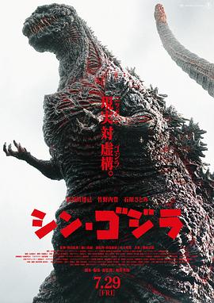

新哥斯拉 / シン・ゴジラ
又名：真・哥斯拉(港) / 正宗哥吉拉(台) / 新哥斯拉·东京陷落 / 哥斯拉：复活 / 新·哥斯拉 / 新哥吉拉 / Godzilla Resurgence / Shin Godzilla
记得之前明明标记过了啊 =，= 我还说日本哥斯拉nb，破坏死光到处放
作品信息
| 导演 | 庵野秀明 / 樋口真嗣 |
| 编剧 | 庵野秀明 |
| 主演 | 长谷川博己 / 竹野内丰 / 石原里美 / 高良健吾 / 大杉涟 / 柄本明 / 余贵美子 / 市川实日子 / 国村隼 / 平泉成 / 松尾谕 / 渡边哲 / 中村育二 / 矢岛健一 / 津田宽治 / 冢本晋也 / 高桥一生 / 光石研 / 古田新太 / 松尾铃木 / 鹤见辰吾 / 泷正则 / 片桐入 / 小出惠介 / 斋藤工 / 前田敦子 / 手塚通 / 野间口彻 / 黑田大辅 / 桥本润 / 小林隆 / 诹访太朗 / 藤木孝 / 岛田久作 / 神尾佑 / 三浦贵大 / 茂吕师冈 / 犬童一心 / 原一男 / 绪方明 / 石垣佑磨 / 野村万斋 |
| 类型 | 剧情 / 科幻 / 灾难 |
| 制片国家/地区 | 日本 |
| 语言 | 日语 / 英语 |
| 上映日期 | 2016-07-29(日本) |
| 片长 | 120分钟 |
| IMDb | tt4262980 |
说过什么
2021-06-25 20:30:42
看过 · 时间来自广播，短评来自标记页
记得之前明明标记过了啊 =，= 我还说日本哥斯拉nb，破坏死光到处放
2021-03-28 18:59:01
广播 · 想看
最后一次看到是 2026-08-01T11:05:18+10:00 · 豆瓣原页